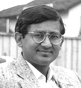

 Amit P. Sheth
Amit Sheth directs the Large Scale Distributed Research Lab at the
University of Georgia (UGA). He is an associate professor of Computer Science
at UGA, and an adjunct associate professor in the College of Computing
at the Georgia Tech.
Research Interests
-
Interoperable Information Systems (esp. Transactional Workflow Management),
Global Information Systems (esp. Management of Heterogeneous Digital Media,
Information Brokering, the Logical/Semantic view of the Web through use
of broad variety metadata and ontologies).
-
Other interests: Evolving collaboration technologies (through merger
of Web, multimedua database, A/V and network computing technologies), Electronic/Information
Commerce, Ontology/Context/Semantics, Schematic Heterogeneity, Federated
Database Systems, Multidatabase Consistency/Interdependent Data, Data Quality,
Schema Integration
Visit LSDIS lab for additional
details.
Recent Book: Multimedia
Data Management: Using Metadata to Integrate and Apply Digital Media, Amit
Sheth and Wolfgang Klas, Eds.
Recent conference/workshop keynote/invited talks:
-
"Semantic
Interoperability in Infocosm: Moving Beyond Infrastructural and Data Interoperability
in Federated Information Systems", Interop'97,
Santa Barbara, December 3-5, 1997.
-
"Pragmatics Driven
Research Issues in Data and Process Integrity in Enterprises" , IFIP
WG 11.5 Conference on Integrity and Control in Information Systems,
Zurich, Switzerland, December 4--5, 1997.
-
"From
Contemporary Workflow Process Automation to Adaptive and Dynamic Work Activity
Coordination and Collaboration", Workshop on Workflows in Scientific
and Engineering Applications, Toulouse, France, September 1997.
-
Infocosm
-
Workflow
Personal
Address
Prof. Amit Sheth
Large Scale Distr. Info. Sys. Lab
Department of Computer Science
University of Georgia
415 Graduate Studies Research Center
Athens GA 30602-7404
706-542-2310 (direct) 706-542-2911 (dept) 706-542-2966 (fax) 706-769-1661 (home fax)
To send me email: amit@cs.uga.edu
To send email to my secretary: secretary@om.cs.uga.edu
To send email to the department secretary: mjp@cs.uga.edu
Large Scale Distributed Information
Systems Lab
UGA CS home page
University of Georgia
{kind=link}
{kind=link}